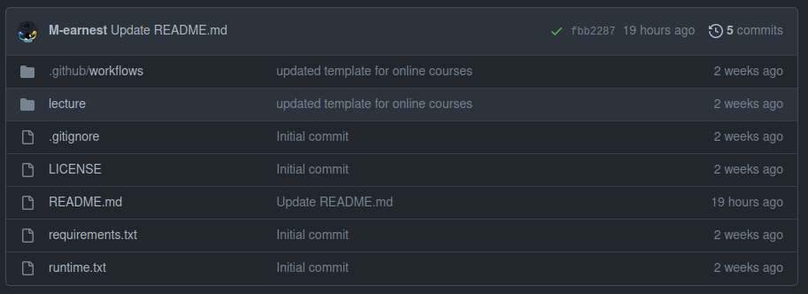
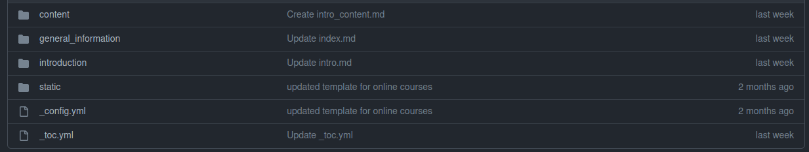
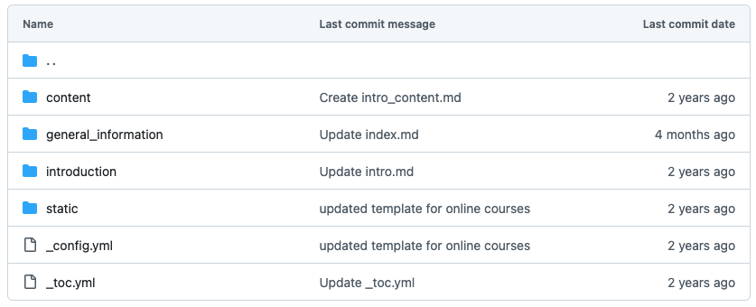
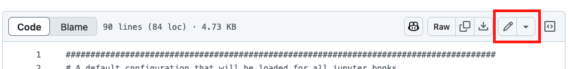
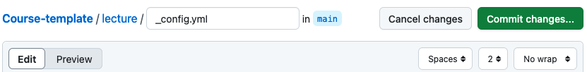
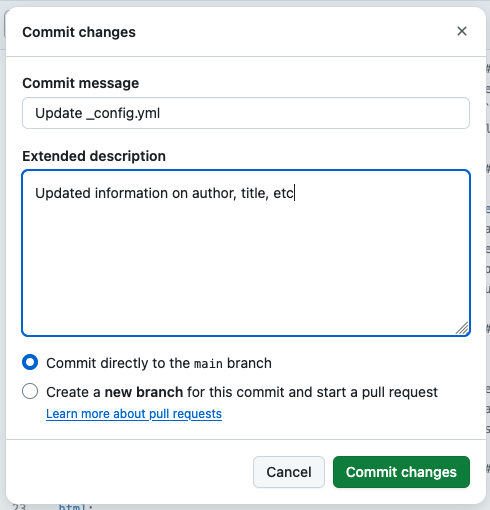
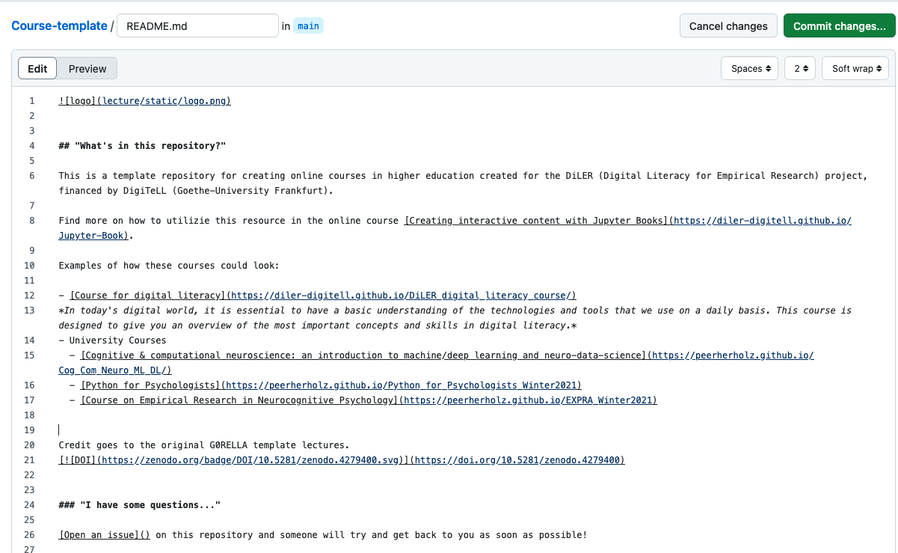
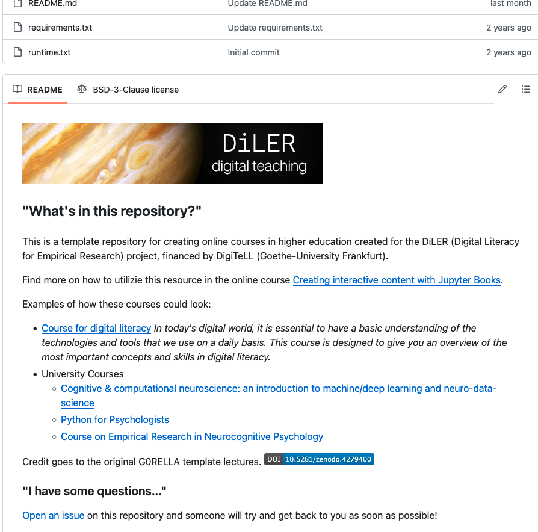
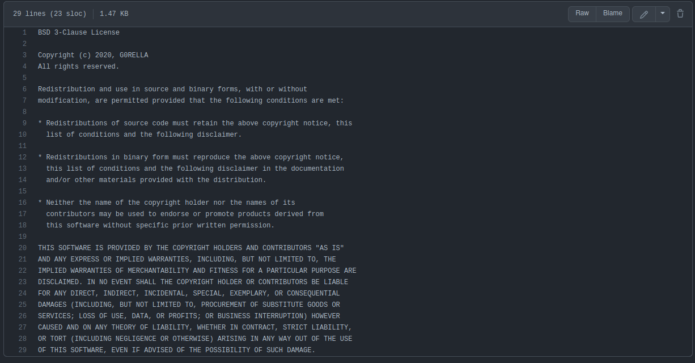

Exploring and Customizing the Template Repository#
Now that you’ve forked the course template and created your own course repo, let’s explore its structure, identify the key files for customization, and make your first changes.
Getting Familiar With the Structure and the Existing Files#
The course template is structured as follows:

Where:
File/Folder |
Description |
|---|---|
.github/workflows |
Contains the prewritten scripts to automatically create your website every time new content is added. |
lecture |
Contains all our content files and directories, as well as the |
README |
A short explanation of your website/course. |
LICENSE |
Self-explanatory, stating who and how people are allowed to use or reproduce the content of this repo. |
requirements.txt |
Contains the necessary requirements for the automatic scripts building the website to run; there is no need to change anything here. |
Now, most the things that you’ll be adapting are contained in the content folder “lecture”, which looks like this:

Where:
File/Folder |
Description |
|---|---|
content |
Contains files making up the main content of a course website. |
general information |
Contains files providing information, such as the necessary setup, the outline of the course, a code of conduct, etc. The included |
introduction |
Contains files making up the introductory sessions of a course. |
static |
Contains all the pictures and graphs contained in a course. |
config.yml |
Contains the course title, authors, and copyright notice at the footer of the website, which you should change before hosting your website. Further, it contains the specifics for the technical implementations of a course, e.g., whether Jupyter notebooks should be re-run every time the course website is created by the GitHub workflow or, e.g., whether a course incorporated interactive elements. |
toc.yml |
Contains information on the structure of the course website. For an in-depth explanation, jump to the respective section. |
Make Your First Adjustments#
Let’s kick things off by diving into the _config.yml file! Here, you’ll update the course title, authors’ names, affiliations, and other key details to make the template your own.
To edit a file, click on the specific file (here:
_config.yml).

Click the edit button, represented by a small pencil in the upper right corner.

Replace the existing information with your course title, your name, affiliation, and any other relevant details. Once you’re finished, click “Commit changes…”.

For transparency and version control, provide a brief message describing the changes you made.

As soon as you click on “Commit changes”, your changes will be saved.
It is further essential that you adapt the README and LICENSE files to your needs:
The README#
To actually display the purpose and, e.g., acknowledgments of your course, you’ll have to adapt the README.md file on your public repo. In the template, this looks like this:

and translates to this view at the bottom of your public remote repo:

Feel free to add some details about your course now! Click on the README.md, then hit the edit button in the upper right corner. You can include your course title, a brief description, your credentials, and contact information. Please keep the credit included to our original G0RELLA template lectures.
We’ll revisit the README.md file later in the section Formatting Content With Markdown, where you’ll learn how to format it using Markdown.
The LICENSE#
The course template is licensed under the BSD 3-Clause License. Feel free to modify the LICENSE file as needed, provided you comply with the terms outlined in the license.

Redistribution and use in source and binary forms, with or without
modification, are permitted provided that the following conditions are met:
* Redistributions of source code must retain the above copyright notice, this
list of conditions and the following disclaimer.
* Redistributions in binary form must reproduce the above copyright notice,
this list of conditions and the following disclaimer in the documentation
and/or other materials provided with the distribution.
* Neither the name of the copyright holder nor the names of its
contributors may be used to endorse or promote products derived from
this software without specific prior written permission.
Before going into detail on how to add files and modify this template to your needs, you will learn how to host your course website.
Next Chapter:#
In the next chapter, you will discover how to publish and maintain your own course website.